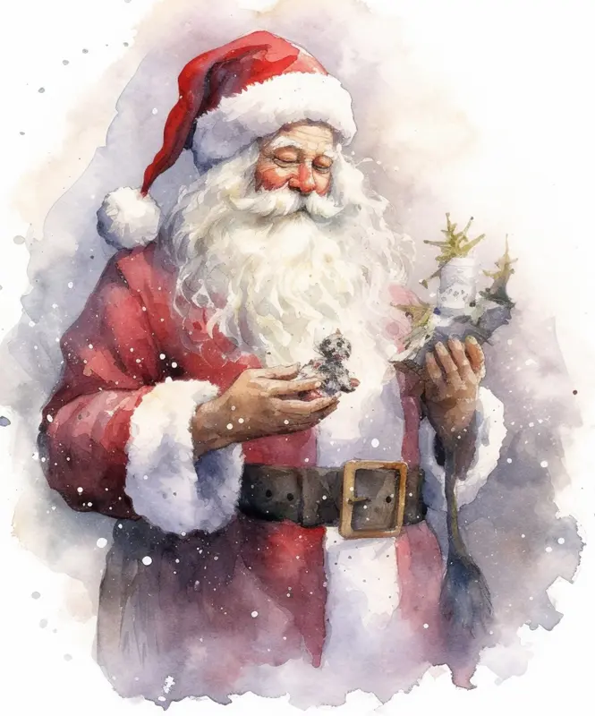
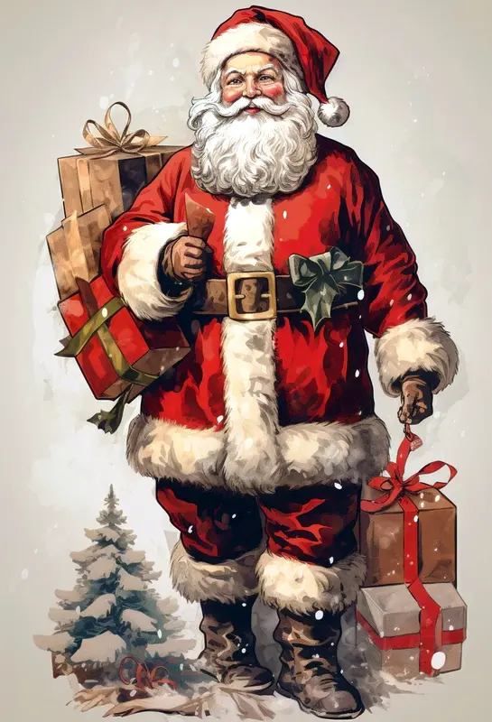
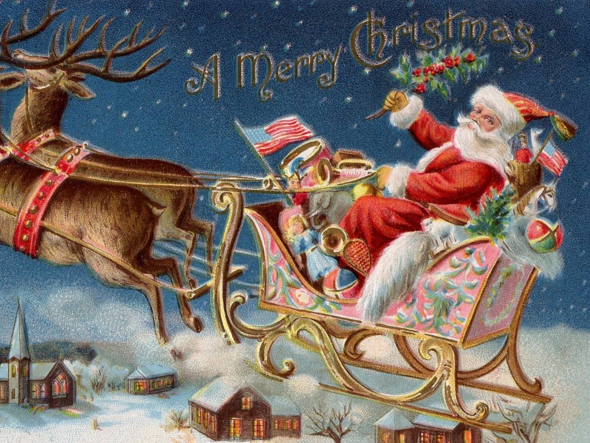
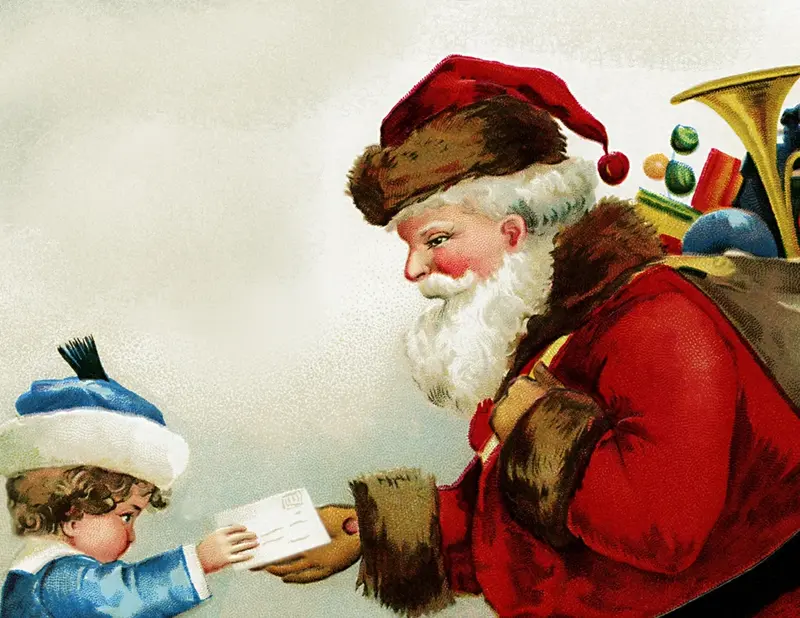
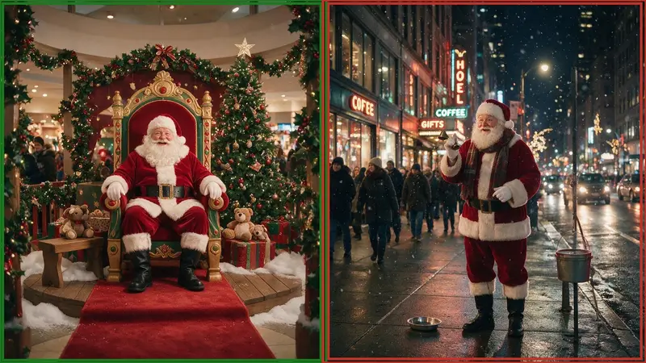
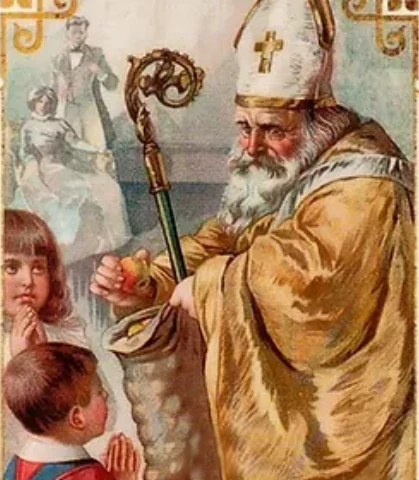

images loading

Modern day Santa Claus is known as a jolly fat man with a long white beard who lives at the North Pole and who dresses in red clothes and wears big black boots.

He flies around the world giving Christmas gifts to children everywhere. He travels by a sleigh which is pulled by eight flying reindeer.

He carries a large bag full of toys which were made by the elves.

He enters houses through the chimney or with his magic key which can open any locked door.
In modern day cities, you can find Santa Claus in parades and at every mall or shopping center, and on many street corner's where he collects money for the poor.

The First Santa Claus
The legend of Santa Claus can be traced back hundreds of years to a Greek bishop named Saint Nicholas, or Saint Nick for short. It is believed that Nicholas was born sometime around 280 A.D. in modern-day Turkey. He was admired for his devotion to God and kindness to people.
His wealthy parents raised him to be a good Christian, but they died in an epidemic while Nicholas was still young. They left all their money and wealth to Nicholas.
Obeying Jesus' words to help the poor and needy, Nicholas gave away his inheritance to assist the sick and the suffering. He gave away all his wealth selflessly, never asking for anything in return. His gift giving was usually done in secret. Saint Nicholas became known throughout the land for his generosity to those in need and his love for children.

One of the best known stories about St. Nicholas is that he saved three poor sisters from being sold into slavery by their father by giving them a dowry so that they could be married. He threw gold through an open window and the gold dropped into the girls' stockings that were hanging by the fireplace to dry. This is where we get the tradition of hanging Christmas stockings on Christmas Eve.
After his death, many people kept his secret gift-giving tradition alive, such as a group of French nuns who began leaving candy and gifts outside the doors of children in need. Eventually, these traditions of gift-giving were taken over by the parents of each home and then later became associated with modern day Christmas and the now famous Santa Claus, who is often still referred to as...Saint Nick.